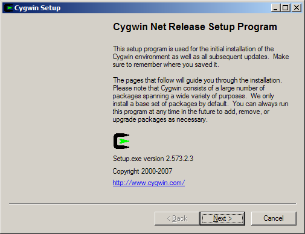
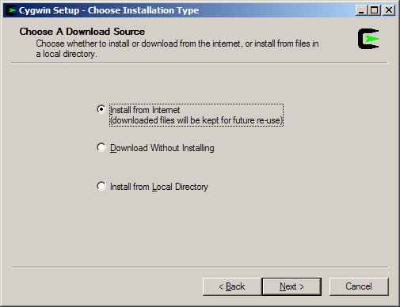
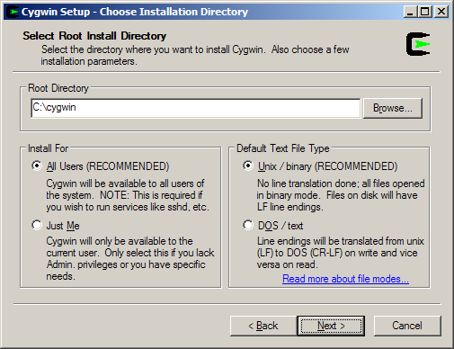
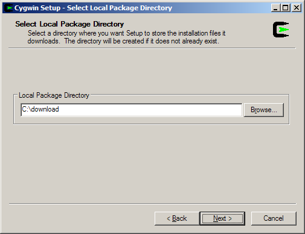
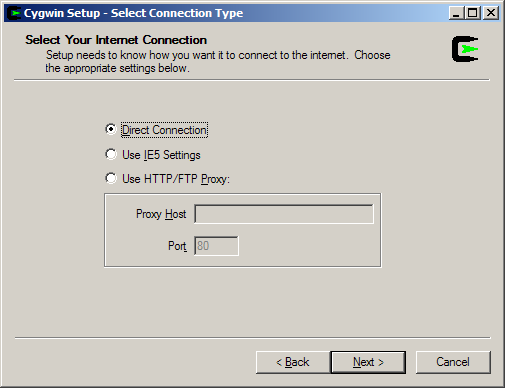
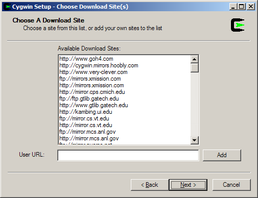
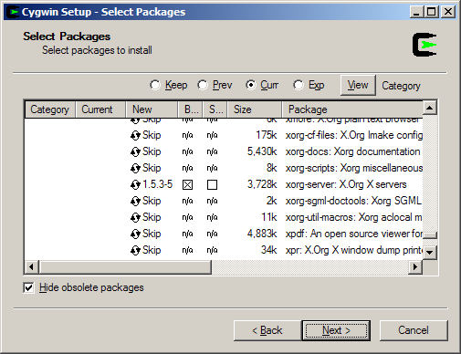
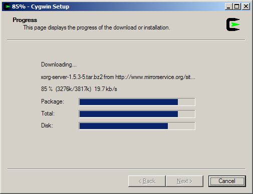
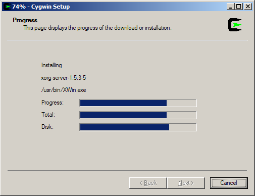
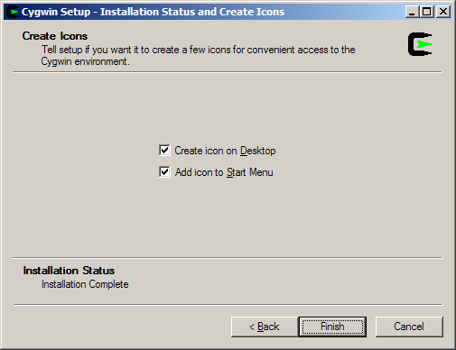

Cygwin has a nice setup program that downloads and installs the necessary Cygwin packages for you.
Open the Cygwin home page in your web browser.
Click on the setup-x86_64.exe link to download the setup program.
Run the Cygwin setup program and you will see the welcome screen:

Click to proceed to the next screen.
Choose, Install from Internet, this will still save the package files to your download directory so that you can install Cygwin on any number of machines:

Click to proceed to the next screen.
The default Root Directory should be fine for most installations. Leave Install For set to All Users unless you lack local administrative privileges.

Click to proceed to the next screen.
Local Package Directory should default to the directory that you ran the setup program from:

Click to proceed to the next screen.
Choose your proxy setup, or, just choose Direct Connection if no proxy is needed:

Click to proceed to the next screen.
Select your nearest mirror for downloading:

Click to proceed to the next screen; setup will download a list of available packages as it moves to the next screen.
On the next screen you will select the packages that will be downloaded and installed. A listing of the Cygwin/X packages is given below; a listing of the general Cygwin packages would be beyond the scope of this document.
Cygwin/X packages are located in the X11 category.
xorg-server (required, the Cygwin/X X Server)
xinit (required, scripts for starting the X server: xinit, startx, startwin (and a shortcut on the Start Menu to run it), startxdmcp.bat )
xorg-docs (optional, man pages)
xlaunch (optional, a wizard for starting X sessions)
You may also select any X client programs you want to use, any X Window Manager or Desktop Environment you want to use (see the Section called Starting an X desktop environment session or X window manager in windowed mode in Chapter 3), and any fonts you would like to have available.
You may also want to ensure that the openssh package is selected if you wish to use ssh connections to run remote X clients.
You may also want to ensure that the inetutils or rsh packages are selected if you wish to use telnet or rsh connections to run remote X clients. (not recommended)
You can run setup again in the future to add more packages.

Click to begin the download process, you may want to try another mirror if you see a "Connecting" message on this screen for a long period of time:

After the packages are downloaded, setup will automatically begin to install them:

I highly recommend allowing Cygwin Setup to create Desktop and Start Menu icons for you; these icons simply launch a bash shell:

Click to close the setup program.
(optional but recommended) Install the cygserver service. See the instructions in the Section called Shared memory support in Chapter 3.
You have now successfully installed Cygwin/X.